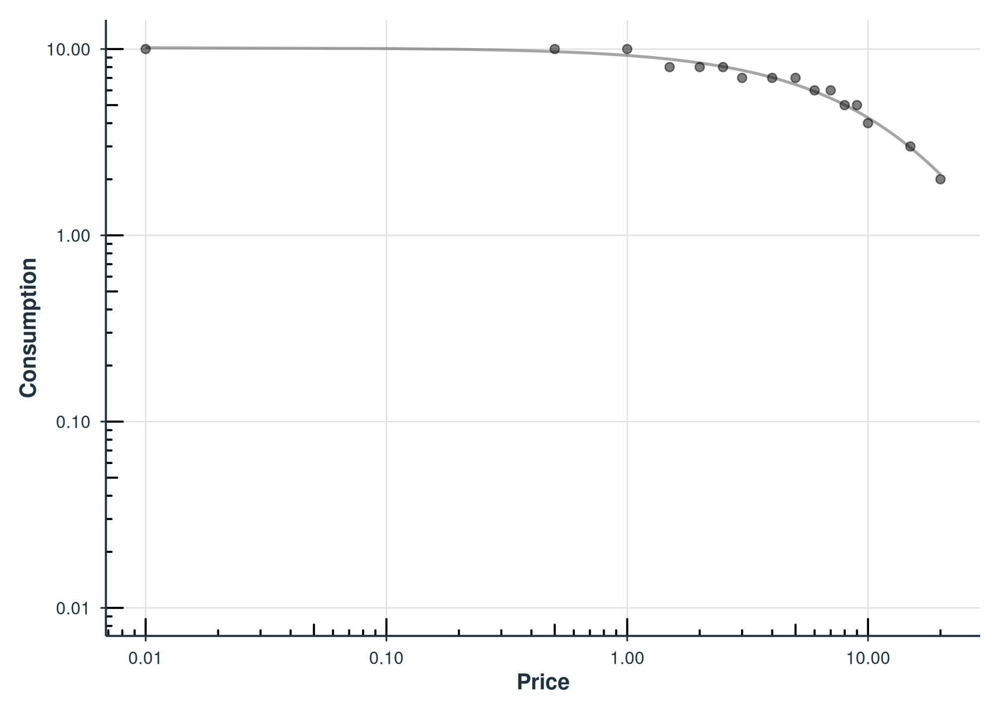

Choosing the Right Demand Model
Brent Kaplan
2026-05-03
Source:vignettes/model-selection.Rmd
model-selection.RmdIntroduction
The beezdemand package provides multiple approaches for
fitting behavioral economic demand curves. This guide helps you choose
the right modeling approach for your data and research questions.
When to Use Demand Analysis
Demand analysis is appropriate when you want to: - Quantify the value of a reinforcer (e.g., drugs, food, activities) - Compare demand elasticity across conditions or groups - Estimate key parameters like intensity (Q0), elasticity (alpha), and breakpoint - Compute derived metrics like Pmax (price at maximum expenditure) and Omax (maximum expenditure)
Quick Decision Guide
| Your Situation | Recommended Approach | Function |
|---|---|---|
| Individual curves, quick exploration | Fixed-effects NLS | fit_demand_fixed() |
| Group comparisons, modern backend | TMB mixed-effects | fit_demand_tmb() |
| Group comparisons, legacy pipeline | NLME mixed-effects | fit_demand_mixed() |
| Many zeros, two-part modeling | Hurdle model | fit_demand_hurdle() |
| Cross-commodity substitution | Cross-price models | fit_cp_*() |
Data Quality First
Before fitting any model, always check your data for systematic responding.
# Check for systematic demand
systematic_check <- check_systematic_demand(apt)
head(systematic_check$results)
#> # A tibble: 6 × 15
#> id type trend_stat trend_threshold trend_direction trend_pass bounce_stat
#> <chr> <chr> <dbl> <dbl> <chr> <lgl> <dbl>
#> 1 19 demand 0.211 0.025 down TRUE 0
#> 2 30 demand 0.144 0.025 down TRUE 0
#> 3 38 demand 0.788 0.025 down TRUE 0
#> 4 60 demand 0.909 0.025 down TRUE 0
#> 5 68 demand 0.909 0.025 down TRUE 0
#> 6 106 demand 0.818 0.025 down TRUE 0
#> # ℹ 8 more variables: bounce_threshold <dbl>, bounce_direction <chr>,
#> # bounce_pass <lgl>, reversals <int>, reversals_pass <lgl>, returns <int>,
#> # n_positive <int>, systematic <lgl>
# Filter to systematic data only (those that pass all criteria)
systematic_ids <- systematic_check$results |>
filter(systematic) |>
dplyr::pull(id)
apt_clean <- apt |>
filter(as.character(id) %in% systematic_ids)
cat("Systematic participants:", n_distinct(apt_clean$id),
"of", n_distinct(apt$id), "\n")
#> Systematic participants: 10 of 10The check_systematic_demand() function applies criteria
from Stein et al. (2015) to identify nonsystematic responding patterns
including:
- Trend (DeltaQ): Consumption should decrease as price increases
- Bounce: Limited price-to-price increases in consumption
- Reversals: No consumption after sustained zeros
Grouped Checks with by
When your data includes grouping variables (gender, condition, etc.),
use by to run checks and summaries within each group:
data(apt_full)
# Systematicity check by gender
sys_by_gender <- check_systematic_demand(apt_full, by = "gender")
sys_by_gender
#>
#> Systematicity Check (demand)
#> ------------------------------
#> Grouped by: gender
#> Total patterns: 1100
#> Systematic: 946 ( 86 %)
#> Unsystematic: 154 ( 14 %)
#>
#> Use summary() for details, tidy() for per-subject results.
# Descriptive summary by gender
desc_by_gender <- get_descriptive_summary(apt_full, by = "gender")
desc_by_gender$statistics |> head()
#> # A tibble: 6 × 9
#> gender Price Mean Median SD PropZeros NAs Min Max
#> <chr> <chr> <dbl> <dbl> <dbl> <dbl> <int> <dbl> <dbl>
#> 1 Female 0 5.08 5 4.11 0.09 0 0 50
#> 2 Female 0.25 4.77 4 3.97 0.15 0 0 40
#> 3 Female 0.5 4.59 4 3.77 0.16 0 0 30
#> 4 Female 1 4.41 4 3.58 0.16 0 0 20
#> 5 Female 1.5 4.14 4 3.41 0.2 0 0 20
#> 6 Female 2 3.86 4 3.09 0.2 0 0 20The by parameter also works with
fit_demand_fixed() — see
vignette("fixed-demand") for a full grouped analysis
example.
Tier 1: Fixed-Effects NLS
When to Use
Use fit_demand_fixed() when you want:
- Individual demand curves for each participant
- Quick exploration of your data
- Compatibility with traditional analysis approaches
- Per-subject parameter estimates without pooling information
Complete Example
# Fit individual demand curves using the Hursh & Silberberg equation
fit_fixed <- fit_demand_fixed(
data = apt,
equation = "hs",
k = 2
)
# Print summary
print(fit_fixed)
#>
#> Fixed-Effect Demand Model
#> ==========================
#>
#> Call:
#> fit_demand_fixed(data = apt, equation = "hs", k = 2)
#>
#> Equation: hs
#> k: fixed (2)
#> Subjects: 10 ( 10 converged, 0 failed)
#>
#> Use summary() for parameter summaries, tidy() for tidy output.
# Get tidy coefficient table
tidy(fit_fixed) |> head()
#> # A tibble: 6 × 10
#> id term estimate std.error statistic p.value component estimate_scale
#> <chr> <chr> <dbl> <dbl> <dbl> <dbl> <chr> <chr>
#> 1 19 Q0 10.2 0.269 NA NA fixed natural
#> 2 30 Q0 2.81 0.226 NA NA fixed natural
#> 3 38 Q0 4.50 0.215 NA NA fixed natural
#> 4 60 Q0 9.92 0.459 NA NA fixed natural
#> 5 68 Q0 10.4 0.329 NA NA fixed natural
#> 6 106 Q0 5.68 0.300 NA NA fixed natural
#> # ℹ 2 more variables: term_display <chr>, estimate_internal <dbl>
# Get model-level statistics
glance(fit_fixed)
#> # A tibble: 1 × 12
#> model_class backend equation k_spec nobs n_subjects n_success n_fail
#> <chr> <chr> <chr> <chr> <int> <int> <int> <int>
#> 1 beezdemand_fixed legacy hs fixed (2) 146 10 10 0
#> # ℹ 4 more variables: converged <lgl>, logLik <dbl>, AIC <dbl>, BIC <dbl>
Individual demand curves for two example participants.
# Basic diagnostics
check_demand_model(fit_fixed)
#>
#> Model Diagnostics
#> ==================================================
#> Model class: beezdemand_fixed
#>
#> Convergence:
#> Status: Converged
#>
#> Residuals:
#> Mean: 0.0284
#> SD: 0.5306
#> Range: [-1.458, 2.228]
#> Outliers: 3 observations
#>
#> --------------------------------------------------
#> Issues Detected (1):
#> 1. Detected 3 potential outliers across subjectsTier 2: Mixed-Effects Models
When to Use
Use fit_demand_mixed() when you want:
- Group comparisons with statistical inference
- Random effects to account for individual variability
- Post-hoc comparisons between conditions
- Estimated marginal means for factor levels
The LL4 Transformation
For the mixed-effects approach with the zben equation
form, transform your consumption data using the LL4 (log-log with
4-parameter adjustment):
Complete Example
# Fit mixed-effects model
fit_mixed <- fit_demand_mixed(
data = apt_ll4,
y_var = "y_ll4",
x_var = "x",
id_var = "id",
equation_form = "zben"
)
# Print summary
print(fit_mixed)
summary(fit_mixed)
# Basic diagnostics
check_demand_model(fit_mixed)
plot_residuals(fit_mixed)$fittedPost-Hoc Analysis with emmeans
For experimental designs with factors, you can use
emmeans for post-hoc comparisons:
# For a model with factors (example with ko dataset):
data(ko)
# Prepare data with LL4 transformation
# (Note: the ko dataset already includes a y_ll4 column, but we
# recreate it here to demonstrate the transformation workflow)
ko_ll4 <- ko |>
dplyr::mutate(y_ll4 = ll4(y))
fit <- fit_demand_mixed(
data = ko_ll4,
y_var = "y_ll4",
x_var = "x",
id_var = "monkey",
factors = c("drug", "dose"),
equation_form = "zben"
)
# Get estimated marginal means for Q0 and alpha across drug levels
emms <- get_demand_param_emms(fit, factors_in_emm = "drug", include_ev = TRUE)
# Pairwise comparisons of drug conditions
comps <- get_demand_comparisons(fit, compare_specs = ~drug, contrast_type = "pairwise")Tier 2b: TMB Mixed-Effects Models
When to Use
Use fit_demand_tmb() when you want:
- Group comparisons with modern estimation (automatic differentiation)
- More equation choices than
fit_demand_mixed()(exponential, exponentiated, simplified, zben) - Estimated or fixed k parameter
- Robust convergence via multi-start optimization and Laplace approximation
- The preferred approach for new mixed-effects analyses
Advantages Over NLME
| Feature | fit_demand_tmb() |
fit_demand_mixed() |
|---|---|---|
| Backend | TMB (C++, automatic differentiation) | nlme (R, numerical gradients) |
| Equations | exponential, exponentiated, simplified, zben | zben, simplified, exponentiated |
| k parameter | Estimated or fixed | Not available |
| Convergence | Robust (AD + Laplace + multi-start) | Can struggle with nonlinear equations |
| Speed | Fast (compiled C++) | Variable |
Complete Example
# Fit TMB mixed-effects model
fit_tmb <- fit_demand_tmb(
data = apt,
y_var = "y",
x_var = "x",
id_var = "id",
equation = "exponential",
random_effects = c("q0", "alpha")
)
# Summary and plot
summary(fit_tmb)
plot(fit_tmb, type = "demand")
# Subject-level parameters
head(get_subject_pars(fit_tmb))Group Comparisons with TMB
data(apt_full)
dat_mf <- apt_full[apt_full$gender %in% c("Male", "Female"), ]
fit_gender <- fit_demand_tmb(
dat_mf,
y_var = "y", x_var = "x", id_var = "id",
equation = "exponential",
factors = "gender",
random_effects = c("q0", "alpha")
)
# Estimated marginal means
get_demand_param_emms(fit_gender, param = "Q0")
# Pairwise comparisons
get_demand_comparisons(fit_gender, param = "alpha")For comprehensive TMB documentation, see
vignette("tmb-mixed-effects").
Tier 3: Hurdle Models
When to Use
Use fit_demand_hurdle() when you have:
- Substantial zero consumption values (>10-15% zeros)
- Need for two-part modeling (zeros vs. positive consumption)
- Interest in both participation and consumption intensity
- TMB backend for fast, stable estimation
Understanding the Two-Part Structure
The hurdle model separates:
- Part I: Probability of zero consumption (logistic regression)
- Part II: Log-consumption given positive response (nonlinear mixed effects)
Complete Example
# Fit hurdle model with 3 random effects
fit_hurdle <- fit_demand_hurdle(
data = apt,
y_var = "y",
x_var = "x",
id_var = "id",
random_effects = c("zeros", "q0", "alpha")
)
# Summary
summary(fit_hurdle)
# Population demand curve
plot(fit_hurdle, type = "demand")
# Probability of zero consumption
plot(fit_hurdle, type = "probability")
# Basic diagnostics
check_demand_model(fit_hurdle)
plot_residuals(fit_hurdle)$fitted
plot_qq(fit_hurdle)Comparing Hurdle Models
Compare nested models using likelihood ratio tests:
# Fit full model (3 random effects)
fit_hurdle3 <- fit_demand_hurdle(
data = apt,
y_var = "y",
x_var = "x",
id_var = "id",
random_effects = c("zeros", "q0", "alpha")
)
# Fit simplified model (2 random effects)
fit_hurdle2 <- fit_demand_hurdle(
data = apt,
y_var = "y",
x_var = "x",
id_var = "id",
random_effects = c("zeros", "q0") # No alpha random effect
)
# Compare models
compare_hurdle_models(fit_hurdle3, fit_hurdle2)
# Unified model comparison (AIC/BIC + LRT when appropriate)
compare_models(fit_hurdle3, fit_hurdle2)Choosing an Equation
The equation argument determines the functional form of
the demand curve. Each equation has trade-offs in terms of flexibility,
zero handling, and comparability across studies.
| Equation | Function | Handles Zeros | k Required | Available In |
|---|---|---|---|---|
"hs" / "exponential"
|
Hursh & Silberberg (2008) | No | Yes | Fixed, TMB, Hurdle |
"koff" / "exponentiated"
|
Koffarnus et al. (2015) | No | Yes | Fixed, NLME, TMB |
"zben" |
Zero-bounded exponential | Yes (via LL4) | No | NLME, TMB |
"simplified" |
Rzeszutek et al. (2025) | Yes | No | Fixed, NLME, TMB, Hurdle |
"zhao_exponential" |
Zhao et al. | No | Yes | Hurdle (default) |
Note: "exponential" and "hs" refer to the
same equation; "exponentiated" and "koff" are
also equivalent. The modern names are used by
fit_demand_tmb() and fit_demand_hurdle(); the
legacy names by fit_demand_fixed().
Recommendations:
- For new analyses, consider using
"simplified"(also called SND) as it handles zeros natively and does not require specifyingk, making results more comparable across studies. - For replication or comparability with existing
literature, use
"hs"or"koff"with the samekspecification as the original study. - When using
"hs"or"koff", zeros in consumption data are incompatible with the log transformation and will be dropped with a warning.
Choosing Parameters
The k Parameter
The scaling constant k controls the asymptotic range of
the demand curve:
-
k = 2: Good default for most purchase task data -
k = "ind": Calculate k individually for each participant -
k = "fit": Estimate k as a free parameter -
k = "share": Fit a single k shared across all participants
# Different k specifications
fit_k2 <- fit_demand_fixed(apt, k = 2) # Fixed at 2
fit_kind <- fit_demand_fixed(apt, k = "ind") # Individual
fit_kfit <- fit_demand_fixed(apt, k = "fit") # Free parameter
fit_kshare <- fit_demand_fixed(apt, k = "share") # Shared across participantsInterpreting Key Parameters
| Parameter | Interpretation | Typical Range |
|---|---|---|
| Q0 (Intensity) | Consumption at zero price | Dataset-dependent |
| alpha (Elasticity) | Rate of consumption decline | 0.0001 - 0.1 |
| Pmax | Price at maximum expenditure | Dataset-dependent |
| Omax | Maximum expenditure | Dataset-dependent |
| Breakpoint | First price with zero consumption | Dataset-dependent |
Troubleshooting FAQ
Model Convergence Issues
Problem: Model fails to converge or produces unreasonable estimates.
Solutions:
- Check data quality with
check_systematic_demand() - Try different starting values
- Use a simpler model (fewer random effects)
- Ensure sufficient data per participant
Zero Handling
Problem: Many zeros in consumption data.
Solutions:
- Use
fit_demand_hurdle()which explicitly models zeros - For fixed-effects: zeros are automatically excluded for log-transformed equations
- Consider data quality: excessive zeros may indicate nonsystematic responding
Parameter Comparison Across Models
Problem: Comparing alpha values between different model types.
Solution: Be aware of parameterization differences:
- Hurdle models estimate on natural-log scale internally
- Use
tidy(fit, report_space = "log10")for comparable output - The transformation is:
log10(alpha) = log(alpha) / log(10)
Summary
| Approach | Best For | Key Features | Handles Zeros |
|---|---|---|---|
fit_demand_fixed() |
Individual curves, quick analysis | Simple, per-subject estimates | Excludes |
fit_demand_tmb() |
Group comparisons (new work) | TMB backend, AD, multi-start, 4 equations | Depends on equation |
fit_demand_mixed() |
Group comparisons (legacy) | nlme backend, emmeans integration | LL4 transform |
fit_demand_hurdle() |
Data with many zeros | Two-part model, TMB backend | Explicitly models |
Next Steps
-
Getting Started: See
vignette("beezdemand")for basic usage -
Fixed-Effect Models: See
vignette("fixed-demand")for individual demand curve fitting -
Group Comparisons: See
vignette("group-comparisons")for extra sum-of-squares F-test -
TMB Mixed-Effects: See
vignette("tmb-mixed-effects")for modern TMB-based mixed models -
NLME Mixed Models: See
vignette("mixed-demand")for NLME-based mixed-effects examples -
Advanced Mixed Models: See
vignette("mixed-demand-advanced")for factors, EMMs, covariates -
Hurdle Models: See
vignette("hurdle-demand-models")for hurdle model details -
Cross-Price: See
vignette("cross-price-models")for substitution analyses -
Convergence: See
vignette("convergence-guide")for convergence troubleshooting -
Migration Guide: See
vignette("migration-guide")for migrating fromFitCurves()
References
- Hursh, S. R., & Silberberg, A. (2008). Economic demand and essential value. Psychological Review, 115(1), 186-198.
- Koffarnus, M. N., Franck, C. T., Stein, J. S., & Bickel, W. K. (2015). A modified exponential behavioral economic demand model to better describe consumption data. Experimental and Clinical Psychopharmacology, 23(6), 504-512.
- Stein, J. S., Koffarnus, M. N., Snider, S. E., Quisenberry, A. J., & Bickel, W. K. (2015). Identification and management of nonsystematic purchase task data: Toward best practice. Experimental and Clinical Psychopharmacology, 23(5), 377-386.
- Kaplan, B. A., Franck, C. T., McKee, K., Gilroy, S. P., & Koffarnus, M. N. (2021). Applying mixed-effects modeling to behavioral economic demand: An introduction. Perspectives on Behavior Science, 44(2), 333-358.
- Kristensen, K., Nielsen, A., Berg, C. W., Skaug, H., & Bell, B. M. (2016). TMB: Automatic differentiation and Laplace approximation. Journal of Statistical Software, 70(5), 1-21.
- Rzeszutek, M. J., Regnier, S. D., Franck, C. T., & Koffarnus, M. N. (2025). Overviewing the exponential model of demand and introducing a simplification that solves issues of span, scale, and zeros. Experimental and Clinical Psychopharmacology.